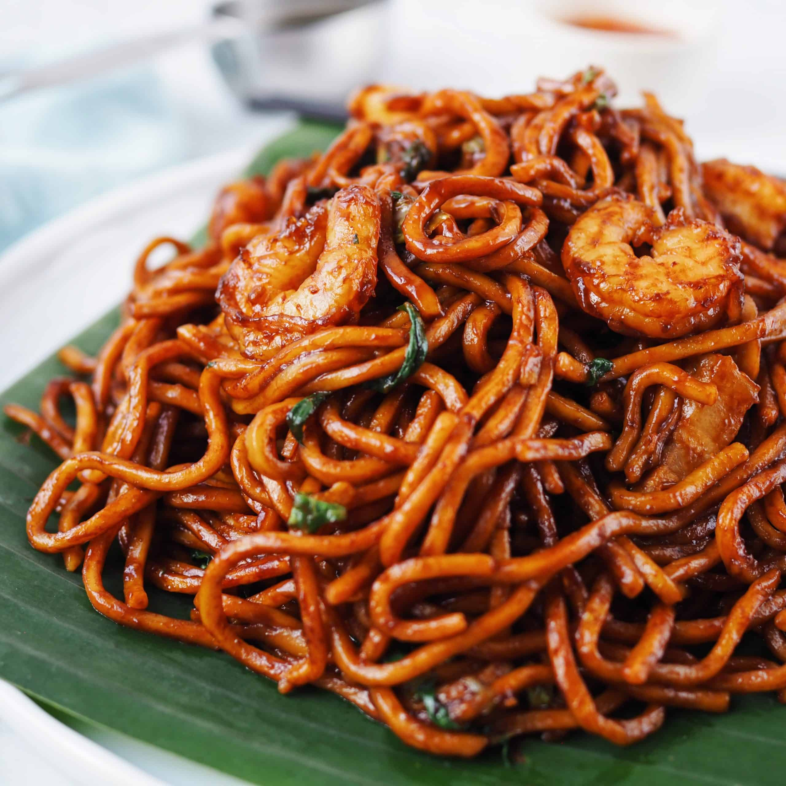

Home
Hokkien Mee Recipe

Description
Fried Hokkien prawn noodles, known locally as Hokkien Mee
Is a dish comprising thick yellow noodles fried in a rich prawn and pork stock and served with chilli and lime on the side.
It is a popular local dish that has various accounts of its origins.
Ingredients
- 1lb Hokkien Noodles
- 12 Oz Chicken thighs, cubed
- 2 Tbsp canola oil
- 2 Garlic cloves, minced
- 8 Green onion stems
- 1 Red Capsicum
- 3 Heaped cups of green cabbage
- 2 Tbsp light soy sauce
- 1.5 Tbsp dark soy sauce
- 2 Tbsp oyster sauce
- 1 Tbsp seame oil
- 1/8 Tsp white pepper
Steps
- Mix the sauce in a small bowl.
- Toss the chicken with 1 1/2 tbsp of the Sauce. Marinate for 10 minutes while you prepare the noodles and vegetables.
- Prepare the noodles per the packet directions (soak in boiling water or briefly boil). Drain in a colander then rinse briefly under tap water
- Heat the oil in a large non-stick pan over high heat until very hot (mine is 30cm/12", Note 9 re: wok). Add the chicken and toss for 1 minute. Add the garlic and white part of the green onion, then toss for another 1 minute or until the surface of the chicken is sealed (but still a bit raw inside)
- Add the capsicum and cabbage. Toss for 2 minutes until the cabbage is mostly wilted. Add the green part of the green onions, noodles and sauce. Toss for 1 1/2 to 2 minutes until the noodles are stained a lovely mahogany colour.
- Serve, sprinkled with sesame seeds and green onion if desired!
Tips
You're a profession chef you got this xD